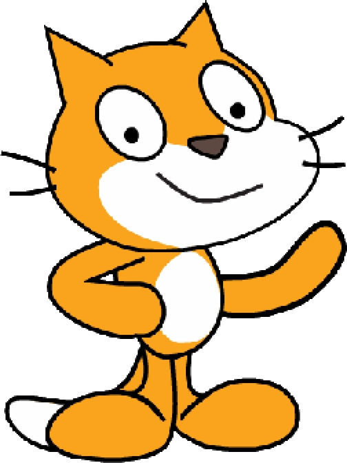

Chicas programando futuro
Qué nos proponemos lograr juntas durante el encuentro. Editá esta lista según el contenido definitivo del taller.
Elegí un nivel de dificultad y programá tu propio proyecto bloque a bloque.

Universidades con carreras de tecnología, becas y cursos gratuitos para seguir el camino después del taller.
Becas Progresar Superior 2026: inscripción abierta del 18 de agosto al 11 de septiembre de 2026 a través de la app Mi Argentina, para estudiar cualquier carrera universitaria, incluidas las tecnológicas.
Tecnicatura Universitaria en Programación Informática y Licenciatura en Sistemas.
Becas propias + ProgresarIngeniería en Sistemas de Información y tecnicaturas en TICs.
Becas propias + ProgresarIngeniería en Informática e Ingeniería en Computación.
Becas propias + ProgresarLicenciatura en Informática e Ingeniería en Computación.
Becas propias + ProgresarIngeniería en Informática y Tecnicatura en Programación Informática.
Becas propias + ProgresarTalleres gratuitos y 100% online pensados para adolescentes, sin conocimientos previos: programación por bloques, apps y páginas web.
Formación gratuita en programación Full Stack del Gobierno de la Ciudad y la Provincia de Buenos Aires, con cupos reservados para mujeres.
Cursos gratuitos con certificación oficial del Ministerio de Economía de la Nación en programación y habilidades digitales.
Certificaciones digitales gratuitas de Google en habilidades de programación, datos y marketing digital.
Ubicaciones aproximadas — verificar la dirección exacta de cada sede antes de publicar.